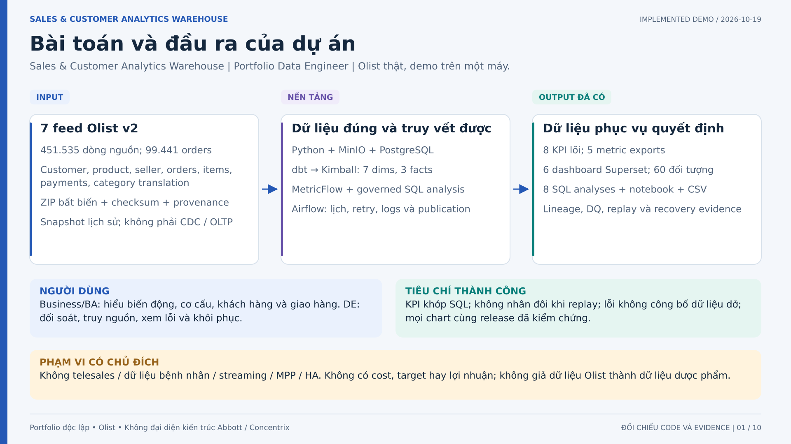
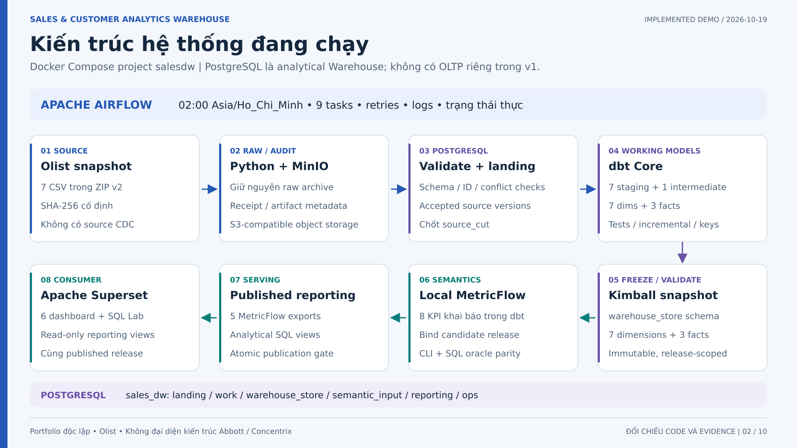
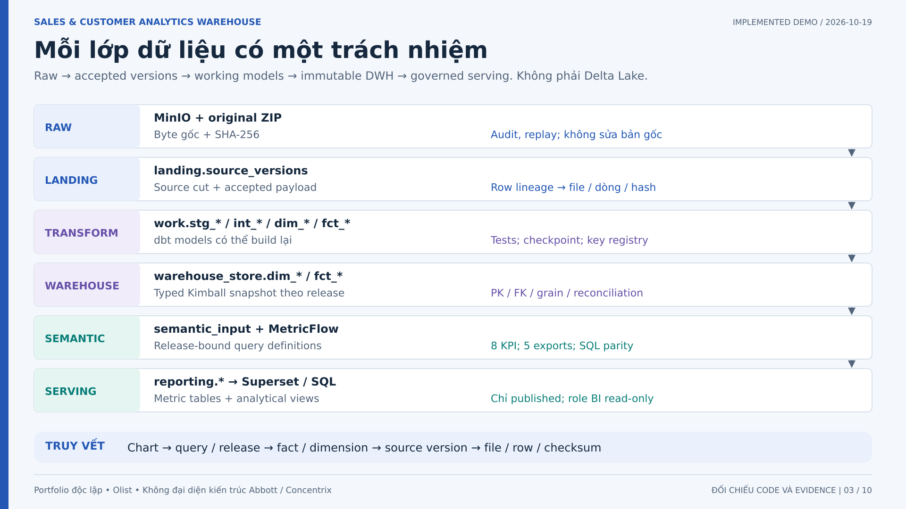
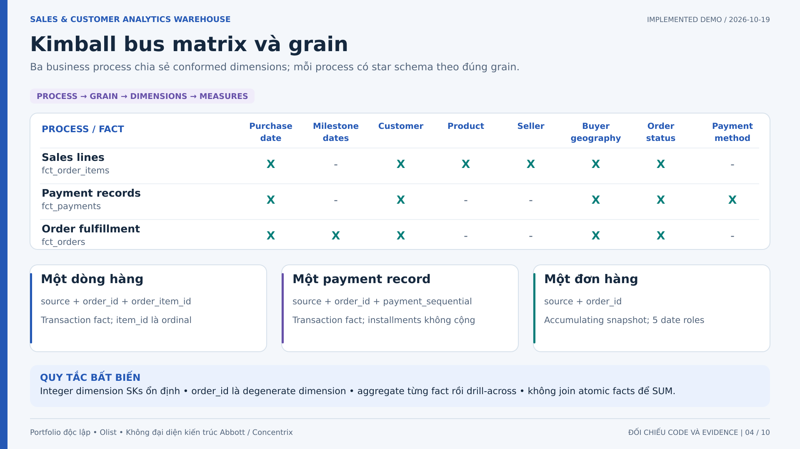
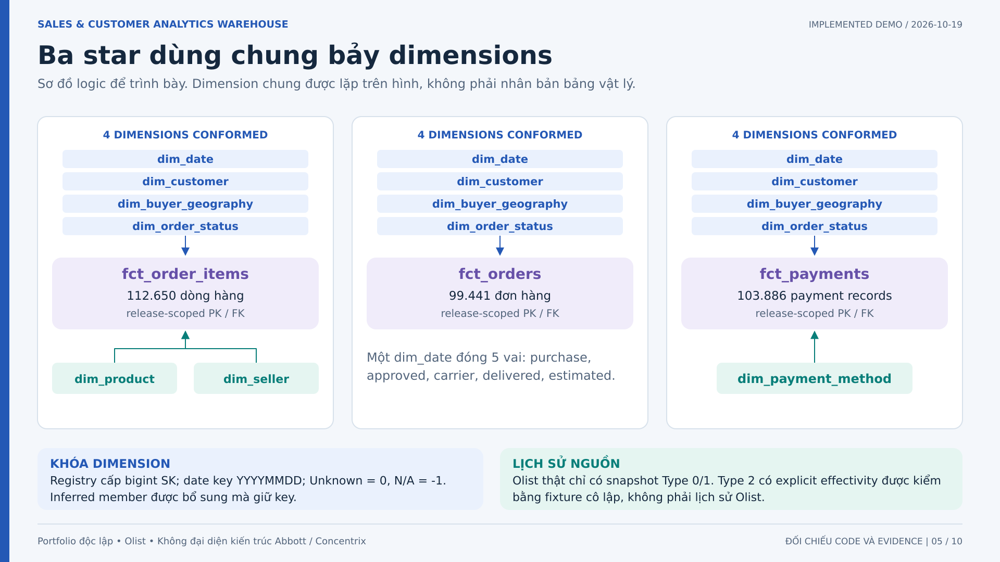
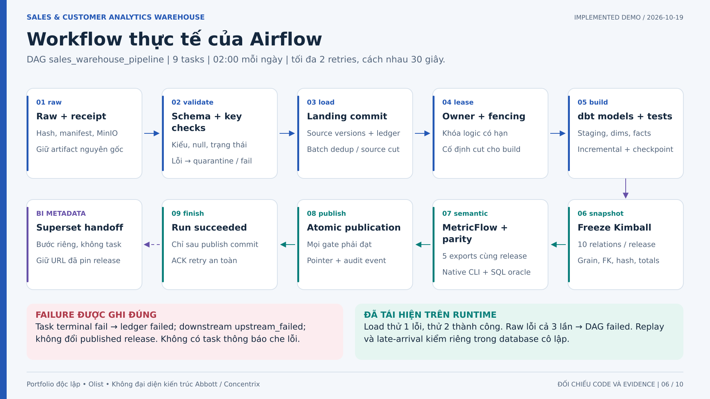
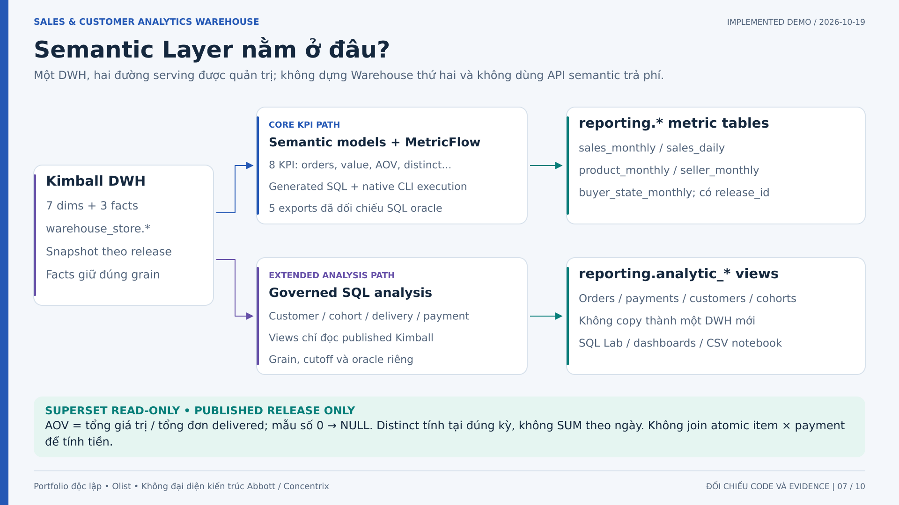
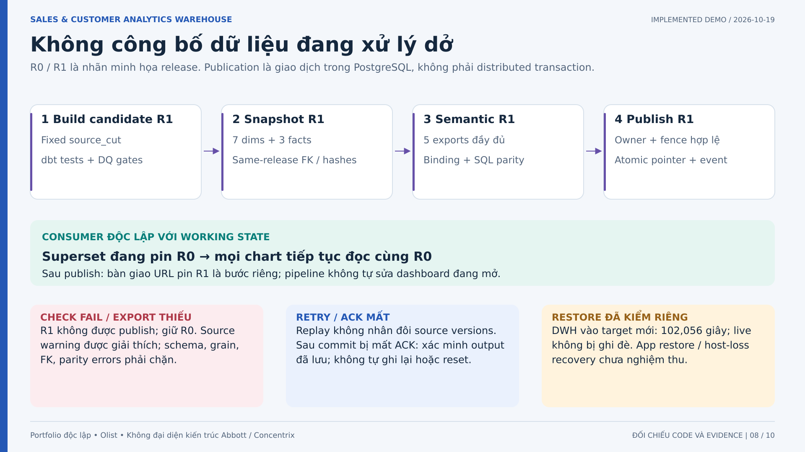
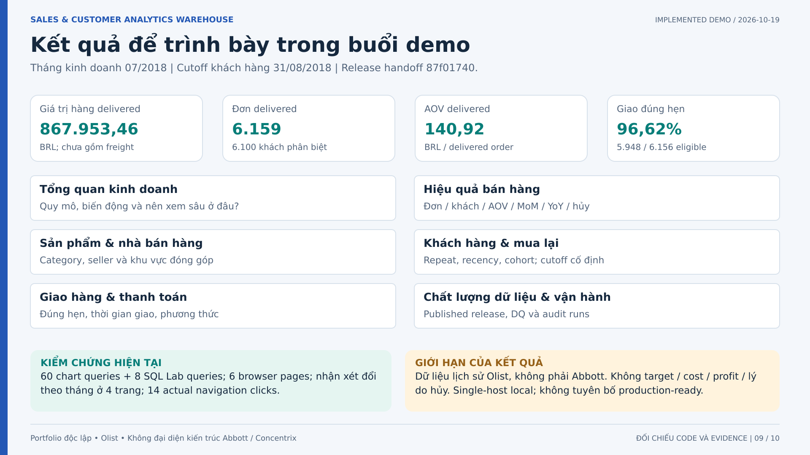
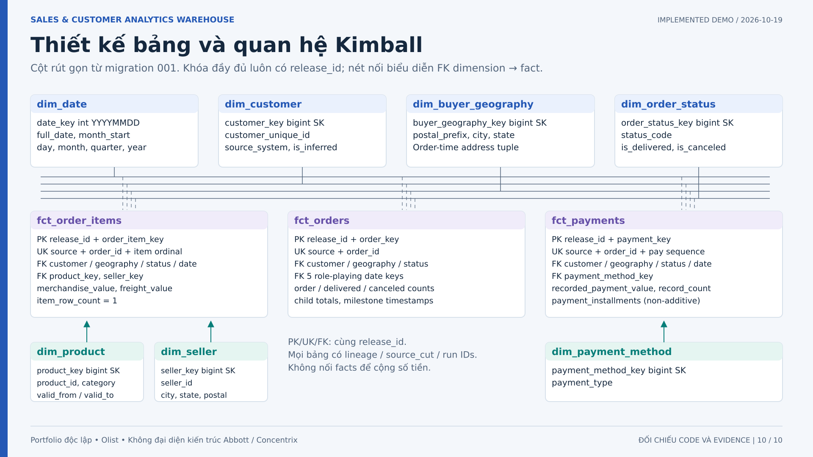

01 Bài toán và đầu ra của dự án
Mở đầu bằng kết quả: nhà phân tích cần số bán hàng, khách hàng và giao hàng nhất quán. Dự án có dữ liệu thật, báo cáo thật và bằng chứng chạy; không phải dự án nội bộ Abbott. Nêu giới hạn telesales ngoài v1.



02 Kiến trúc hệ thống đang chạy
Đọc hàng trên từ trái sang phải, hàng dưới từ phải sang trái theo số thứ tự. Airflow gọi các stage CLI; dbt và MetricFlow là tiến trình theo run, không phải container thường trực. Superset chỉ đọc reporting views của published releases. Metadata ứng dụng tách database.



03 Mỗi lớp dữ liệu có một trách nhiệm
Đây là DWH quan hệ trên PostgreSQL, có tư tưởng phân lớp nhưng không dùng Iceberg/Delta hay gọi MinIO là một lakehouse. Reporting cùng database, không phải DWH thứ hai. Chỉ mutable work được rebuild; consumer đọc snapshot đã publish.



04 Kimball bus matrix và grain
Bus matrix là kế hoạch tích hợp các star, không thay thế star schema. Tất cả grain có source namespace. Purchase date ở payment là ngữ cảnh đơn, không phải timestamp thanh toán. Không phân bổ payment cho product/seller khi không có hợp đồng.



05 Ba star dùng chung bảy dimensions
Đọc từng cột như một star. Date/customer/geography/status là cùng bốn dimension vật lý trên cả ba cột. Product/seller chỉ ở item star, method chỉ ở payment star. Không có đường nối giữa các fact; xem hình 10 để đọc khóa/cột vật lý.



06 Workflow thực tế của Airflow
Đọc 1-5 trên rồi 6-9 dưới từ phải sang trái. Raw đã gồm manifest/hash và bảo toàn archive; build bao gồm dbt và tests. Finish không gọi Superset bootstrap. Lịch được chạy nhiều lần nhưng nguồn Olist tĩnh không tạo sự kiện kinh doanh mới. Batch replay không phải CDC.



07 Semantic Layer nằm ở đâu?
MetricFlow đọc candidate Kimball qua release-bound views, sinh và chạy SQL rồi xuất kết quả vào reporting tables. Phân tích cohort/delivery/payment dùng published SQL views riêng, không được gọi là MetricFlow mới. Superset đọc cả hai qua role readonly; không tính lại công thức lõi theo từng chart.



08 Không công bố dữ liệu đang xử lý dở
R0 tiếp tục phục vụ trong lúc R1 được build. Warehouse snapshot phải đầy đủ, cùng source cut, FK/grain đạt; semantic phải bind R1 và exports có parity. Chỉ khi tất cả đạt publisher mới đổi pointer dưới fencing. Superset URL R0 còn pin R0; muốn chọn R1 phải tạo/bàn giao assets riêng.



09 Kết quả để trình bày trong buổi demo
Đọc KPI tháng 7 trước, sau đó dùng menu để đi sâu. Chứng cứ hiện tại: 6 trang, 60 đối tượng, 8 saved queries và 14 lượt bấm navigation thật. Không gọi khoản merchandise value là profit/net revenue; BRL là quy ước demo. Restore và retry là bằng chứng lịch sử, không phải chạy lại khi xuất tài liệu.



10 Thiết kế bảng và quan hệ Kimball
Bốn dimensions ở hàng trên kết nối độc lập tới cả ba facts; chúng được gom thành bốn thanh routing ngang để giữ hình dễ đọc. Các đường chỉ đi từ dimension tới fact, không có fact-to-fact FK. PK facts là text identity cộng release; dimension SK là integer. Xem ERD Mermaid đi kèm để đọc từng FK cụ thể.